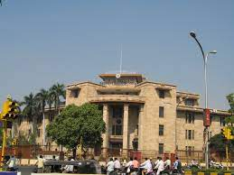
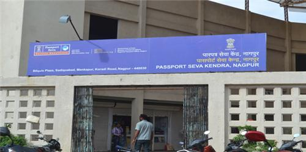

Reserve Bank of India. The Reserve Bank of India was established on April 1, 1935 in accordance with the provisions of the Reserve Bank of India Act, 1934. The Central Office of the Reserve Bank was initially established in Kolkata but was permanently moved to Mumbai in 1937.
The Ministry of External Affairs operates Passport Offices known as Passport Seva Kendras (PSK's) through 37 Passport Offices, 93 Passport Seva Kendras (PSKs) and 424 Post Office Passport Seva Kendras (POPSK) as of March, 2023. The ministry has also setup 11 mini passport offices known as Passport Seva Laghu Kendras
